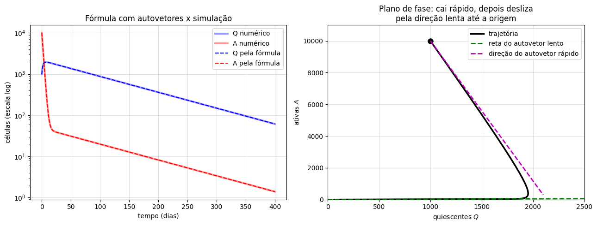
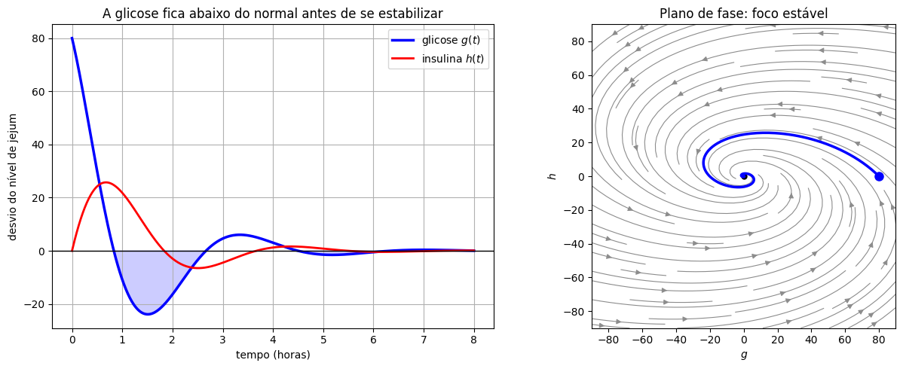

Aplicações#
Vamos aplicar o que aprendemos a dois modelos: o modelo de células-tronco leucêmicas da aula de modelagem (autovalores reais) e um modelo clássico da regulação da glicose no sangue (autovalores complexos). Nos dois, os autovalores e autovetores não servem só para escrever a fórmula da solução: eles explicam o que se observa.
import numpy as np
import matplotlib.pyplot as plt
import sympy as sp
from scipy.integrate import solve_ivp
def retrato(A, ax, lim=3, titulo=None, autovetores=True):
# Desenha o retrato de fase de x' = A x no quadrado [-lim, lim]^2
A = np.array(A, dtype=float)
s = np.linspace(-lim, lim, 40)
X, Y = np.meshgrid(s, s)
U = A[0, 0]*X + A[0, 1]*Y
V = A[1, 0]*X + A[1, 1]*Y
ax.streamplot(X, Y, U, V, color='0.55', density=1.1, linewidth=0.8, arrowsize=1)
if autovetores:
lam, vec = np.linalg.eig(A)
if np.all(np.abs(lam.imag) < 1e-12):
pares = list(zip(lam.real, vec.T.real))
if abs(lam[0] - lam[1]) < 1e-6:
pares = pares[:1]
for l, v in pares:
ax.plot([-3*lim*v[0], 3*lim*v[0]], [-3*lim*v[1], 3*lim*v[1]],
'--', linewidth=2, label=fr'$\lambda={l:.3g}$')
ax.legend(loc='lower right', fontsize=8)
ax.plot(0, 0, 'ko', markersize=5)
ax.set_xlim(-lim, lim); ax.set_ylim(-lim, lim); ax.set_aspect('equal')
ax.set_xlabel('$x_1$'); ax.set_ylabel('$x_2$')
if titulo:
ax.set_title(titulo)
def trajetoria(A, x0, T, ax, cor='b'):
# Integra x' = A x a partir de x0 e desenha a trajetória
A = np.array(A, dtype=float)
sol = solve_ivp(lambda t, x: A @ x, (0, T), x0, max_step=T/500)
ax.plot(sol.y[0], sol.y[1], color=cor, linewidth=2.5)
ax.plot(x0[0], x0[1], 'o', color=cor, markersize=7)
return sol
Células-tronco leucêmicas sob tratamento#
Relembrando o modelo, com \(Q\) as células quiescentes e \(A\) as ativas:
com \(a\) a taxa de ativação, \(b\) a de retorno à quiescência, \(p\) a de proliferação das ativas e \(k\) a de morte das ativas pelo tratamento.
Quando o tratamento funciona?#
Sem resolver nada, o diagrama traço–determinante já responde. Calculando,
Se \(k<p\) (o remédio mata as células ativas mais devagar do que elas se dividem), \(\det M<0\): a origem é uma sela, e a doença cresce.
Se \(k>p\), \(\det M>0\). Além disso, \(\operatorname{tr}M=-(k-p)-a-b<0\). A origem está no segundo quadrante do diagrama: é assintoticamente estável, e a doença é eliminada.
O limiar é \(k=p\): o tratamento precisa matar as células ativas mais rápido do que elas proliferam. Note que as quiescentes não entram na conta — mas, como veremos, elas decidem quanto tempo a eliminação leva.
Por que nunca há oscilação?#
Será que as populações poderiam oscilar (autovalores complexos)? O discriminante é
que é sempre positivo (pois \(a,b>0\)). Os autovalores são sempre reais: o modelo nunca produz oscilações, qualquer que seja o tratamento. Faz sentido biológico: as células só trocam de compartimento, se dividem ou morrem, sem nenhum mecanismo de «retorno» que gere ciclos.
Os autovalores e as duas fases#
Com os valores da aula de modelagem (\(a=0{,}01\), \(b=0{,}05\), \(p=0{,}1\), \(k=0{,}5\), por dia):
a, b, p, k = 0.01, 0.05, 0.1, 0.5
M = np.array([[-a, b], [a, p - k - b]])
print("tr M =", np.trace(M), " det M =", np.linalg.det(M))
lam, V = np.linalg.eig(M)
V = V / V[0] # normaliza: primeira componente igual a 1
for l, v in zip(lam, V.T):
print(f"autovalor {l:.4f} autovetor {np.round(v, 4)}")
tr M = -0.46 det M = 0.004000000000000002
autovalor -0.0089 autovetor [1. 0.0227]
autovalor -0.4511 autovetor [ 1. -8.8227]
Os autovalores são \(\lambda_{\text{lento}}\approx-0{,}0089\) e \(\lambda_{\text{rápido}}\approx-0{,}451\), os dois negativos: um nó estável. Os autovetores contam o resto da história:
o autovetor rápido é \(\approx(1,\,-8{,}8)\): aponta quase na direção do eixo \(A\). A fase rápida é a morte das células ativas;
o autovetor lento é \(\approx(1,\,0{,}023)\): aponta quase na direção do eixo \(Q\). Depois da fase rápida, a solução se alinha com ele, e a proporção entre as populações fica fixa em cerca de \(2{,}3\) ativas para cada \(100\) quiescentes. A doença residual é quase toda quiescente, e é eliminada no ritmo lento \(e^{-0{,}0089t}\) — o ritmo com que as quiescentes são ativadas e então mortas.
Como sabemos os autovalores e autovetores, podemos escrever a solução exata, \(\mathbf{x}(t)=c_1\mathbf{v}^{(1)}e^{\lambda_1t}+c_2\mathbf{v}^{(2)}e^{\lambda_2t}\), e achar \(c_1,c_2\) resolvendo um sistema linear com a condição inicial — exatamente as ferramentas das últimas aulas. Vamos comparar a fórmula com a simulação numérica e ver a trajetória no plano de fase:
x0 = np.array([1000, 10000])
coef = np.linalg.solve(V, x0) # c1 v1 + c2 v2 = x0
print("c1, c2 =", coef)
t = np.linspace(0, 400, 800)
x_exata = (V * coef) @ np.exp(np.outer(lam, t))
sol = solve_ivp(lambda t, x: M @ x, (0, 400), x0, t_eval=t, rtol=1e-9, atol=1e-12)
fig, axs = plt.subplots(1, 2, figsize=(13, 5))
axs[0].semilogy(t, sol.y[0], 'b', linewidth=3, alpha=0.4, label='Q numérico')
axs[0].semilogy(t, sol.y[1], 'r', linewidth=3, alpha=0.4, label='A numérico')
axs[0].semilogy(t, x_exata[0], 'b--', label='Q pela fórmula')
axs[0].semilogy(t, x_exata[1], 'r--', label='A pela fórmula')
axs[0].set_xlabel("tempo (dias)"); axs[0].set_ylabel("células (escala log)")
axs[0].set_title("Fórmula com autovetores x simulação"); axs[0].legend(); axs[0].grid(True, alpha=0.4)
ax = axs[1]
ax.plot(sol.y[0], sol.y[1], 'k', linewidth=2.5, label='trajetória')
ax.plot(*x0, 'ko', markersize=8)
i_lento, i_rapido = np.argmax(lam), np.argmin(lam)
v_l, v_r = V[:, i_lento], V[:, i_rapido]
ax.plot([0, 2500*v_l[0]], [0, 2500*v_l[1]], 'g--', linewidth=2, label='reta do autovetor lento')
ax.plot([x0[0], x0[0] + 1100*v_r[0]], [x0[1], x0[1] + 1100*v_r[1]], 'm--', linewidth=2,
label='direção do autovetor rápido')
ax.set_xlim(0, 2500); ax.set_ylim(0, 11000)
ax.set_xlabel("quiescentes $Q$"); ax.set_ylabel("ativas $A$")
ax.set_title("Plano de fase: cai rápido, depois desliza\npela direção lenta até a origem")
ax.legend(); ax.grid(True, alpha=0.4)
plt.tight_layout()
plt.show()
c1, c2 = [ 2127.97627393 -1127.97627393]

No plano de fase, a trajetória primeiro despenca na direção do autovetor rápido (as ativas morrem, e algumas viram quiescentes, por isso \(Q\) aumenta um pouco) e depois desliza ao longo do autovetor lento até a origem. É o retrato de um nó estável com autovalores de escalas muito diferentes.
Uma consequência prática, discutida em modelos desse tipo: como a fase lenta é ditada pela ativação das quiescentes, e não pela potência do remédio, aumentar \(k\) acelera a fase rápida mas quase não muda a fase lenta. Experimente: o autovalor lento fica preso perto de \(-a=-0{,}01\), por mais que \(k\) cresça.
for k_ in [0.2, 0.5, 1, 2, 5]:
Mk = np.array([[-a, b], [a, p - k_ - b]])
l = np.sort(np.linalg.eigvals(Mk))
print(f"k = {k_:4}: autovalor rápido = {l[0]:8.4f} autovalor lento = {l[1]:8.5f}")
k = 0.2: autovalor rápido = -0.1535 autovalor lento = -0.00652
k = 0.5: autovalor rápido = -0.4511 autovalor lento = -0.00887
k = 1: autovalor rápido = -0.9505 autovalor lento = -0.00947
k = 2: autovalor rápido = -1.9503 autovalor lento = -0.00974
k = 5: autovalor rápido = -4.9501 autovalor lento = -0.00990
Regulação da glicose no sangue#
Depois de uma refeição, o nível de glicose no sangue sobe e o pâncreas libera insulina, que faz a glicose baixar. Um modelo linear clássico desse mecanismo, proposto por Ackerman e colaboradores nos anos 1960 para interpretar o teste de tolerância à glicose (e apresentado, por exemplo, no livro Differential Equations and Their Applications, de M. Braun), usa os desvios em relação aos níveis de equilíbrio (em jejum): \(g(t)\) para a glicose e \(h(t)\) para a insulina (e outros hormônios que agem junto com ela):
\(-m_1g\): o próprio organismo consome o excesso de glicose;
\(-m_2h\): a insulina reduz a glicose;
\(m_4g\): glicose alta estimula a liberação de insulina;
\(-m_3h\): a insulina em excesso é eliminada.
É um mecanismo de realimentação negativa: glicose alta gera insulina, que baixa a glicose. Na matriz,
Traço negativo e determinante positivo: segundo quadrante, a origem é sempre assintoticamente estável (a glicose volta ao normal). Mas, diferente do modelo de leucemia, aqui os coeficientes fora da diagonal têm sinais opostos (\(-m_2\) e \(m_4\)), e o determinante pode ser grande. Se \(\Delta=(m_1+m_3)^2-4(m_1m_3+m_2m_4)=(m_1-m_3)^2-4m_2m_4<0\), os autovalores são complexos: um foco estável. A glicose volta ao normal oscilando.
Vamos ver com valores ilustrativos (por hora): \(m_1=1\), \(m_2=3\), \(m_3=0{,}5\), \(m_4=1\), e um desvio inicial de glicose de \(80\) mg/dL logo após uma ingestão rápida de açúcar (modelada como um aumento instantâneo).
m1, m2, m3, m4 = 1.0, 3.0, 0.5, 1.0
G = np.array([[-m1, -m2], [m4, -m3]])
print("tr =", np.trace(G), " det =", np.linalg.det(G), " Delta =", np.trace(G)**2 - 4*np.linalg.det(G))
print("autovalores:", np.linalg.eigvals(G))
t = np.linspace(0, 8, 600)
sol = solve_ivp(lambda t, x: G @ x, (0, 8), [80, 0], t_eval=t)
fig, axs = plt.subplots(1, 2, figsize=(13, 5))
axs[0].plot(t, sol.y[0], 'b', linewidth=2.5, label='glicose $g(t)$')
axs[0].plot(t, sol.y[1], 'r', linewidth=2, label='insulina $h(t)$')
axs[0].axhline(0, color='k', linewidth=1)
axs[0].fill_between(t, sol.y[0], 0, where=sol.y[0] < 0, color='b', alpha=0.2)
axs[0].set_xlabel("tempo (horas)"); axs[0].set_ylabel("desvio do nível de jejum")
axs[0].set_title("A glicose fica abaixo do normal antes de se estabilizar")
axs[0].legend(); axs[0].grid(True)
retrato(G, axs[1], lim=90, autovetores=False, titulo="Plano de fase: foco estável")
axs[1].plot(sol.y[0], sol.y[1], 'b', linewidth=2.5)
axs[1].plot(80, 0, 'bo', markersize=8)
axs[1].set_xlabel("$g$"); axs[1].set_ylabel("$h$")
plt.tight_layout()
plt.show()
tr = -1.5 det = 3.5 Delta = -11.75
autovalores: [-0.75+1.71391365j -0.75-1.71391365j]

O resultado não é óbvio: a glicose não desce suavemente até o nível normal. Ela passa do ponto e fica abaixo do nível de jejum por um tempo (a região sombreada), porque a insulina liberada continua agindo mesmo depois de a glicose já ter baixado. Esse «mergulho» depois da subida é observado na prática em testes de tolerância à glicose (algumas pessoas sentem sono ou fome algumas horas depois de uma refeição muito doce).
A ligação com a segunda ordem#
Eliminando \(h\) do sistema (é o caminho inverso do que fizemos na aula de modelagem), obtém-se uma única equação para a glicose:
com \(2\alpha=-\operatorname{tr}\) e \(\omega_0^2=\det\). É um oscilador harmônico amortecido! A glicose se comporta como uma massa presa a uma mola, com o amortecimento e a rigidez dados pela fisiologia. Ackerman e colaboradores propuseram usar o período natural \(T_0=2\pi/\omega_0\), estimado ajustando o modelo às medidas de um teste de tolerância à glicose, como indicador da qualidade da regulação: um período natural longo indica uma regulação lenta, associada ao diabetes. (Os valores acima são apenas ilustrativos.)
w0 = np.sqrt(np.linalg.det(G))
print(f"omega_0 = {w0:.3f} rad/h -> período natural T0 = 2*pi/omega_0 = {2*np.pi/w0:.2f} horas")
omega_0 = 1.871 rad/h -> período natural T0 = 2*pi/omega_0 = 3.36 horas
Moral da história#
Nos dois modelos, a pergunta «o que acontece com o sistema?» foi respondida pelo traço e determinante (estabilidade), pelos autovalores (escalas de tempo e oscilação) e pelos autovetores (a «forma» da solução a longo prazo). A fórmula explícita da solução é útil, mas a informação mais valiosa costuma estar nessas estruturas.
No próximo tema, vamos acrescentar um termo forçante: \(\mathbf{x}'=A\mathbf{x}+\mathbf{g}(t)\) — por exemplo, uma infusão contínua de remédio, ou refeições ao longo do dia.